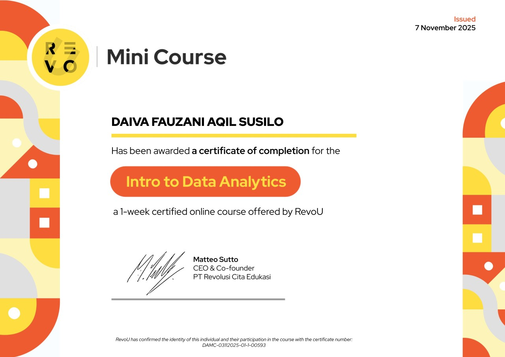
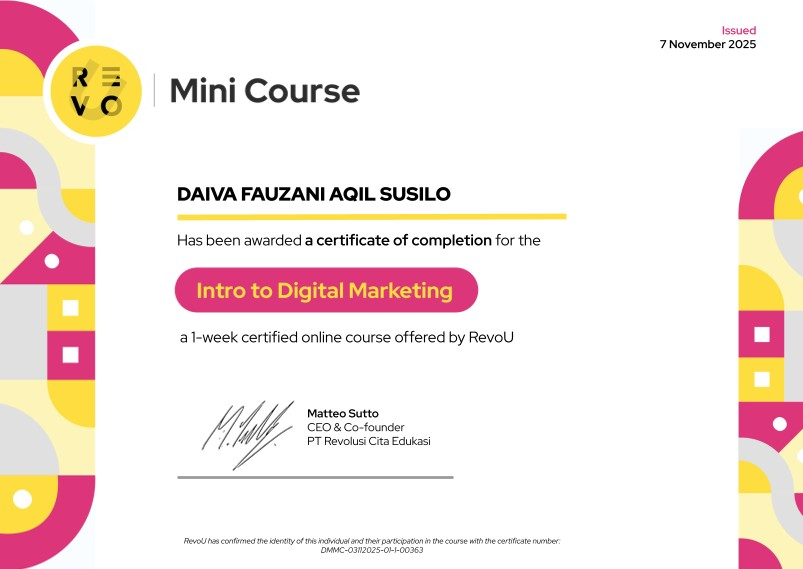

Nama
Daiva
HALAMAN PROFIL PRIBADI
Mahasiswa Sistem Informasi
Selamat datang di halaman portofolio saya. Halaman ini merupakan pengenalan singkat tentang profil saya, dengan tampilan yang dirancang sederhana, modern, dan nyaman digunakan dari berbagai ukuran layar.
Profil pribadi · Portofolio akademik
TENTANG SAYA
Saya Daiva, mahasiswa Sistem Informasi. Halaman ini disusun sebagai profil pribadi yang dapat dikembangkan untuk menampilkan informasi akademik dan karya.
Desain halaman menggunakan susunan elemen yang terstruktur, ruang kosong yang cukup, serta warna yang konsisten agar informasi mudah dibaca. Tata letaknya juga menyesuaikan ukuran layar desktop maupun perangkat mobile.
RINGKASAN
Informasi utama tentang saya
Daiva
Mahasiswa Sistem Informasi
Tempat pengenalan diri dan pengembangan informasi profil.
PENCAPAIAN
Dokumentasi sertifikat dan pencapaian saya

Dokumentasi pencapaian dan kegiatan yang telah diikuti.

Dokumentasi pencapaian dan kegiatan yang telah diikuti.

Dokumentasi pencapaian dan kegiatan yang telah diikuti.